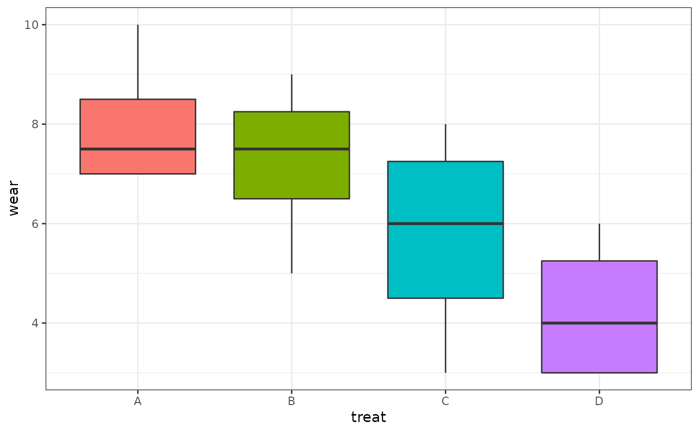
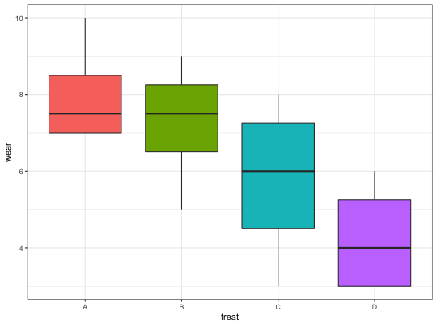
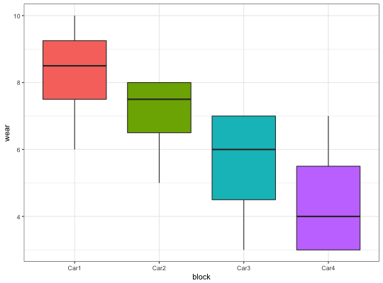
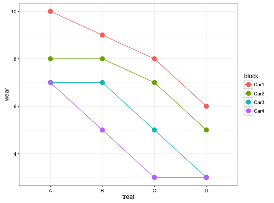
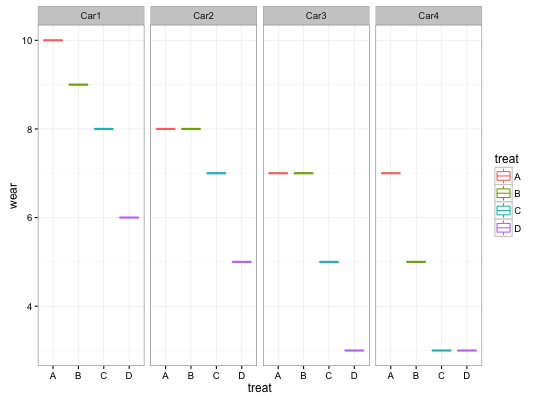

Function creates side-by-side boxplots for each factor, a design plot (means), and an interaction plot.
twoway.plots(Y, fac1, fac2, COL = c("#A9E2FF", "#0080FF"))
with(data = TIREWEAR, twoway.plots(wear, treat, block))################################# ## Similar graphs with ggplot2 ## ################################# p1 <- ggplot(data = TIREWEAR, aes(x = treat, y = wear, fill = treat)) + geom_boxplot() + guides(fill = FALSE) + theme_bw() p2 <- ggplot(data = TIREWEAR, aes(x = block, y = wear, fill = block)) + geom_boxplot() + guides(fill = FALSE) + theme_bw() p3 <- ggplot(data = TIREWEAR, aes(x = treat, y = wear, color = block, group = block)) + stat_summary(fun.y = mean, geom = "point", size = 4) + stat_summary(fun.y = mean, geom = "line") + theme_bw() p4 <- ggplot(data = TIREWEAR, aes(x = treat, y = wear, color = treat)) + geom_boxplot() + facet_grid(. ~ block) +theme_bw() p1p2p3p4## To get all plots on the same device use gridExtra (not run) ## library(gridExtra) ## grid.arrange(p1, p2, p3, p4, nrow=2)